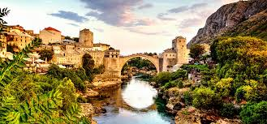

Mostar je jedan od najljepših gradova u Bosni i Hercegovini, poznat po svojoj bogatoj historiji i skokovima sa Starog mosta.
Ovo su mjesta koja ne smijete propustiti:
Spisak jela koja trebate isprobati:
Više informacija o gradu možete pronaći na zvaničnoj stranici:
Turistička zajednica Mostar